Nmap
sudo nmap -sS -n 192.168.20.0/24
-n → No hacer resolución DNS reversa, se utiliza para desactivar la resolución de DNS durante el escaneo. No realizará la resolución de nombres de dominio para las direcciones IP de los objetivos y mostrará las direcciones IP directamente en los resultados del escaneo en lugar de los nombres de host.
0/24 → Rango de ip
Si se realiza de esta forma se puede ser visto por los sistemas de detección como SNORT u otros IDS
-sn (No port scan)
En este caso solo detecta los host de la subred pero no activará detección en SNORT, ya que el tráfico generado es unicamente ARP (esta dirección IP a que dirección MAC corresponde)
No es muy confiable ya que es muy fácil de spoofear el protocolo ARP
-PS <port list> (TCP SYN Ping)
Paquete TCP vacío y lo manda al puerto 80 para verificar la actividad
sudo nmap -PS -n -sn 192.168.20.0/24
Escanea los host activos pero no se puede spoofear porque verifica con un paquete TCP vacío al puerto 80 y si no responde no está activo.
Aunque el puerto esté cerrado el host responde con un reset por lo que la maquina sigue estando activa
-PU <port list> (UDP Ping)
sudo nmap -PU -n -sn 192.168.20.0/24
Comandos de escaneo de puertos:
-sS (TCP SYN scan)
-sU (UDP scans)
-sA (TCP ACK scan)
Solo son algunos ejemplos, para mas:
https://nmap.org/book/man-port-scanning-techniques.html
------------------------------------------------------------------------------------------------------------------------------------------------------------------------------------------------------------------------------------------------------------------------------------------------------------
Script para spoofear una mac address con python y engañar a un escaneo sin verificación de actividad en algún puerto de la maquina objetvo
from scapy.all import *
def handle_packet(packet):
if packet[ARP].op == 1:
if packet.pdst == "192.168.20.152":
print("Sending ARP response")
reply = ARP(op=2,
hwsrc="00:0C:29:3D:1D:6F",
psrc="192.168.20.152",
hwdst="00:50:56:C0:00:03",
pdst="192.168.20.255")
pkt = Ether(dst="00:50:56:C0:00:03", src="00:0C:29:3D:1D:6F") / reply
sendp(pkt)
sniff(filter="arp", prn=handle_packet)
------------------------------------------------------------------------------------------------------------------------------------------------------------------------------------------------------------------------------------------------------------------------------------------------------------
--EJEMPLO REAL--
Con los nodos de la red o host ahora identificar los puertos que tienen abiertos en la red sin ser detectados por SNORT.
sudo nmap -PS -n -sn 192.168.20.0/24
Escaneo de nodos/hosts
Y si ahora realizásemos un escaneo de puertos con cualquiera de las técnicas proporcionadas por nmap como -sS/-sU/-sA....
inmediatamente seríamos detectados por SNORT y si estuviera configurado como tal nos habría podido sacar rápidamente de la subred para aislarnos y así evitar intrusiones.
Para poder evitar tanto trafico a la hora de escanear los puertos podemos usar técnicas de especificación de paquetes.
--top-ports 5
Analiza los <n> puertos con la mayor proporción encontrados en el archivo nmap-services después de excluir todos los puertos especificados por --exclude-ports. <n> debe ser 1 o superior
sudo nmap -sS -n --top-ports 5 192.168.20.128
Con este escaneo es menos probable ser detectados porque se genera mucho menos ruido
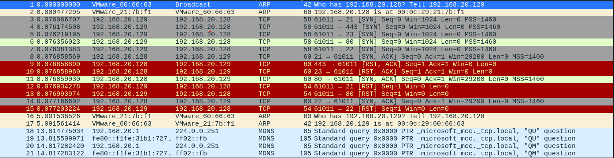
Como se puede ver en este escaneo de wireshark el tráfico generado es mucho menor que un escaneo completo y SNORT u otros IDS no lo detectarán como actividad sospechosa
Es muy importante controlar el numero de puertos en números bajos ya que a mayor numero el tráfico puede ser suficiente como para alertar al IDS, mejor no ser avariciosos y tener paciencia.
-p10,11,15,32
Es importante saber que puedes escanear puertos manualmente con en anterior comando especificando de forma manual.
Vamos a utilizar otras técnicas para modificar los paquetes y así evadir otras posibles medidas de seguridad.
------------------------------------------------------------------------------------------------------------------------------------------------------------------------------------------------------------------------------------------------------------------------------------------------------------
FRAGMENTACIÓN DE PAQUETES
https://nmap.org/book/man-bypass-firewalls-ids.html
-f (fragment packets); --mtu (using the specified MTU)
Coge los paquetes que utilizará para el escaneo y los divide en fragmentos más pequeños o IP packets.
La idea es dividir la cabecera del paquete TCP de 20bytes, en bloques menores y enviarlos.
Su objetivo es principalmente evitar FIREWALLS herramientas que analizan la cabecera del paquete y la rechazan en función de ciertos parámetros.
Actualmente esta medida es muy popular pero funciona pocas veces ya que es muy fácil ser detectada.
Esta es la diferencia de realizar un escaneo con o sin fragmentación respectivamente.
nmap -sS -n -p10
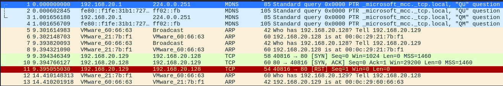
Como se observa genera el tráfico TCP con SYN ACK en un paquete completo, pero si un firewall estuviese bloqueando la conexiones de protocolo TCP podemos:
nmap -sS -n -p10 -f
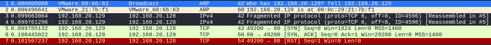
Sin embargo si observamos SNORT vemos un aviso peculiar
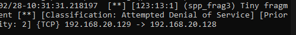
Detecta que se han enviado pequeños fragmentos de paquetes IP que luego se deben re-ensamblar en la maquina objetivo y esto provoca el aviso debido a que esta es una de las formás mas comunes de hacer ataques DDoS o denegación de servicio
ya que se satura al servidor con pequeños paquetes de forma masiva que debe reformar en paquetes TCP y devolver, provocando ralentización o colapso de los servicios.
Lo que podemos hacer es fragmentar aun más los paquetes de 8 a 16 bytes añadiendo un f más al comando anterior
nmap -sS -n -p10 -ff
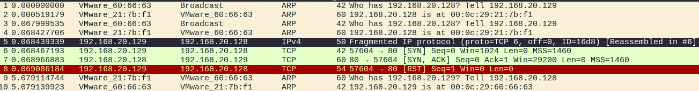
De esta forma SNORT no detecta los paquetes y vemos como en vez de 3 paquetes fragmentados solo hay dos ya que una cabecera de 20 bytes dividida en paquetes de 16 son 2 y dividida en paquetes de 8 son 3.
nmap -sS -n -mtu <8bytes o multiplos de 8>
Con el anterior comando podemos especificar el número de bytes en el que fragmentar los paquetes.
En resumen esta técnica es útil para evadir ciertas medidas de seguridad como firewalls pero hay que tener en cuenta no masificar el tráfico por muy fragmentado que esté, si no los IDS detectarán rápido un escaneo de puertos.
------------------------------------------------------------------------------------------------------------------------------------------------------------------------------------------------------------------------------------------------------------------------------------------------------------
Decoy scan o escaneo de señuelo
-D <decoy1>[,<decoy2>][,ME][,...] (Cloak a scan with decoys)
Provoca un “spoofing” en la dirección IP de origen que realiza el escaneo (máquina atacante), con el objetivo de que cuando tengamos un HOST dentro de la red al que queramos escanear, las máquinas de IDS o defensa de la red no detecten que el escaneo se está llevando a cabo desde nuestra maquina, utilizamos NMAP para modificar la IP de origen de los paquetes que lancemos para el escaneo.
De esta manera si tenemos un IDS, este detectará que hay varias máquinas dentro de su subred que intentan escanear el objetivo y no sabrá identificar correctamente cual es la máquina atacante.
nmap -sS -n -D 192.168.20.1,192.169.20.254,ME 192.168.20.128
Con esta opción le indicamos una serie de direcciones IP que use como señuelo, aunque si queremos que sea realista debemos usar las mismas que se obtienen con el escaneo de NODOS o HOST realizados previamente y que se encuentran activas dentro de la subred.
En este caso usamos algunas básicas y ME para que indicar que añada nuestra IP al “spoofing”
.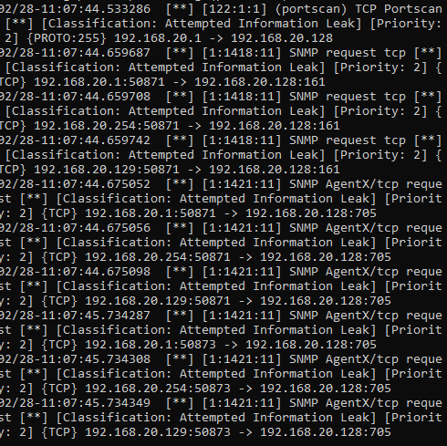
Como se observa en SNORT detecta el escaneo de puertos desde varias IP, siendo las mismas que le hemos indicado previamente.
Esto es más un método preventivo para el posible análisis posterior del ataque.
Una cosa a tener en cuenta es que si indicamos dentro de las IP señuelo la misma IP que la maquina objetivo obtendremos un gran número de alertas en SNORT ya que es raro que una IP se escanee a si misma y es muy sospechoso
.------------------------------------------------------------------------------------------------------------------------------------------------------------------------------------------------------------------------------------------------------------------------------------------------------------
Parámetro -S
Permite que manipulemos la dirección IP de origen desde la que se realiza el escaneo desde NMAP. Es muy parecido al método anterior pero no usamos señuelos, simplemente modificamos la IP desde la que se generan los paquetes de escaneo.
nmap -n -S 192.168.20.1 192.168.20.128
Igual que antes lo recomendable es usar maquinas que estén activas dentro de la subred en la que estemos ya que así parecerá una petición normal de servicios o un simple error de algún servicio en segundo plano, etc
En la ejecución de esta técnica tenemos que especificar la interfaz desde la que se enviarán los paquetes y ademas usar el parámetro -Pn que, se utiliza para indicar a la herramienta que no realice el descubrimiento de hosts (ping host) antes de escanear los puertos. Básicamente, desactiva la función de detección de hosts y asume que los objetivos especificados están activos.
El motivo por el cual nos pida la interfaz de escaneo es porque cuando dos nodos o HOST dentro de una misma subred se intentan comunicar lo hacen mediante su dirección física o MAC ya que la dirección IP se utiliza para la comunicación entre NODOS de diferentes redes y por eso existe el protocolo ARP. Y es debido a esto que a la hora de realizar el port scan con NMAP indicando la IP, este primero realiza un ARP request para preguntar cuál es la dirección física de la IP para poder enviar los paquetes
.De esta forma con esta técnica buscamos modificar la IP de origen pero no la dirección MAC ya que si lo hiciésemos mandaríamos la información pero no podríamos tenerla de vuelta ya que la MAC no se corresponde.
nmap -n -Pn -S 192.168.20.1 -e eth0 192.168.20.128
En la versión de NMAP 7.94 o 7.92 no es posible así que nos iremos a una inferior
.http://ftp.de.debian.org/debian/pool/main/n/nmap/nmap_7.91+dfsg1+really7.80+dfsg1-2_amd64.deb
Si es necesario debido a un error de libreria lua-lpeg o similares descargar e instalar igualmente
https://packages.debian.org/bookworm/lua-lpeg
https://packages.debian.org/bullseye/libssl1.1
Hecho el escaneo vemos como en SNORT indica que el escaneo hacia 192.168.20.198 es proveniente de la dirección 192.168.20.1 que es la manipulada ya que la real es 192.168.20.129
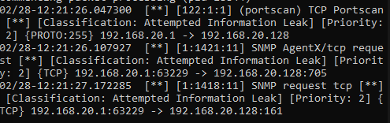
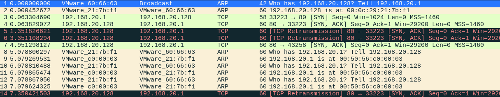
Si vemos en WireShark también indica que la IP que se quiere comunicar con la objetivo es la 192.168.20.1 y no la real
.Esta técnica también es muy útil cuando hay configurado un firewall que solo permite o limita la conexión de acceso por dirección IP de origen, por lo que manipulando nuestra IP de esta forma podremos saltarnos esa barrera de acceso.
Además a veces el firewall puede estar configurado para que además de una dirección IP concreta también sea mediante un puerto concreto por lo que tendremos que especificar el puerto desde el que realizar el escaneo
.
nmap -n -Pn -S 192.168.20.1 --source-port 80 -p21 -e eth0 192.168.20.128
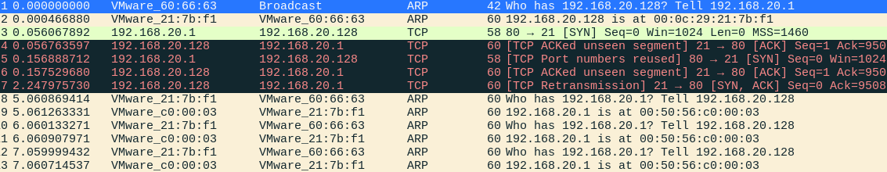
Como vemos el escaneo indica que se realiza desde el puerto 80 al 21
------------------------------------------------------------------------------------------------------------------------------------------------------------------------------------------------------------------------------------------------------------------------------------------------------------
Control de tiempos en un escaneo
Una de las técnicas por excelencia en un escaneo para evadir herramientas de seguridad como IDS o IPS.
Esto es importante porque estas soluciones de seguridad implementan reglas que se basan en la combinación de diferentes reglas como por ejemplo:
Si se detecta más de X numero de paquetes TCP que van dirigidos a diferentes puertos es posible que sea un escaneo. Además se suele combinar con otra regla que indica que si además si este envío de paquetes se realiza en menos de X tiempo es más probable que sea una alerta de escano.
https://nmap.org/book/man-performance.html
-T paranoid|sneaky|polite|normal|aggressive|insane (Set a timing template)
paranoid (0), sneaky (1), polite (2), normal (3), aggressive (4), and insane (5)
--scan-delay <time>; --max-scan-delay <time> (Adjust delay between probes)
Indicando mediante numero INT cuantos segundos debe esperar entre cada paquete
.Hoy en dia aunque realicemos el escaneo con -T 0 que sería el mas tardado SNORT u otros IDS lo detectará.
Para optimizar esto haremos un pequeño BASH script:
for i in {0..30..2}; do; sudo nmap -sS -p$(($i+1))-$((i+2)) -n 192.168.20.128; sleep 40; done;
Lo que va a realizar es un recorrido de 0 a 30 de 2 en 2 puertos lanzando NMAP para esos dos puertos concretos, espera 30 segundos y continua.
Aunque esperemos, si aumentamos el numero de puertos que escanea es más probable que nos detecte
.------------------------------------------------------------------------------------------------------------------------------------------------------------------------------------------------------------------------------------------------------------------------------------------------------------
Utilizar protocolo IPV6
Las direcciones IP tienen un número finito de nodos que pueden referenciar definido por 32bytes, lo que hace que con tanta cantidad de dispositivos ya no se pueda referenciar a todos con una dirección IP por lo que surgió IPV6 y al igual que IPV4 referencias los HOST de la subred pero con más bytes
.Esto importante porque actualmente IPV6 es muy soportado para la intercomunicación pero las reglas en los sistemas de seguridad como IDS no están tan orientadas a tráfico IPV6 por lo que puede ser una puerta de entrada para evadir esta seguridad
.Para poder referenciar el objetivo con su IPV6 usaremos el concepto DIRECCIONES MULTICAST
,(dirección de multi difusión) es una dirección IP especial que se utiliza para enviar datos desde un único emisor a varios receptores en una red. A diferencia de las direcciones unicast (para una sola interfaz de red) y las direcciones de difusión (para todas las interfaces en una red), las direcciones multicast se utilizan para comunicarse con un grupo específico de hosts en la red.
De manera lógica se referencia un número de nodos en una red con el objetivo de poder enviar información sin necesidad de establecer comunicaciones individuales con cada uno de ellos.
Las direcciones multicast se encuentran dentro del rango reservado de direcciones IP asignado para este propósito. El rango IPv4 asignado para direcciones multicast es 224.0.0.0 a 239.255.255.255.
En IPv6, las direcciones multicast se representan con el prefijo
ff00::/8
. Estas direcciones son esenciales para funciones como la autoconfiguración sin estado, la transmisión de mensajes de enrutamiento y otros servicios específicos de IPv6.

Entonces para descubrir los nodos o vecinos de la subred con IPV6 vamos a utilizar PING6 que enviará paquetes ICMP a todos los nodos de la red
.
ping6 ff02::1
ip neigh
Para ver los “vecinos" que nos han respondido
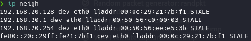
sudo nmap -sS -n -6 fe80::20c:29ff:fe21:7bf1 -e eth0
Esto puede no detectar algunos puertos con servicios que no soporten comunicación IPV6 pero también evitará que firewalls sin configuración para IPV6 tampoco nos detecten, aunque en este caso SNORT si que detecta el escaneo de puertos.
------------------------------------------------------------------------------------------------------------------------------------------------------------------------------------------------------------------------------------------------------------------------------------------------------------
ESCANEO DE SERVICIOS
Una vez sabemos que máquinas están levantadas y que puertos están abiertos nos interesa saber que servicios están ejecutándose en ellos y que versiones tienen
.
sudo nmap -sV
Para no tener que realizar un escaneo de servicios a todos los puertos sino que con la previa información obtenida lo direccionamos directamente a los puertos de interés.
sudo nmap -sV -n -p21,22,80 192.168.20.128
Al ser tan dirigido no saltaran alarmas en el IDS
.Es muy importante tener en conocimiento los puertos y los host activos para evitar rudio innecesario a la hora de reconocer servicios o aplicaciones activas en una maquina
.De igual forma para identificar el sistema operativo de la maquina
sudo nmap -O -n 192.168.20.128
Y por defecto NMAP realizará un escaneo de puertos de forma automática para recabar información sobre los mismos y así obtener que sistema los ejecuta, por lo que hará ruido innecesario y activara los IDS
.
sudo nmap -O -n -p21,22,80 192.168.20.128
Aun así es arriesgado y es posible ser detectados pero añadiendo todas las técnicas anteriores para combinar reduciremos el ruido y las posibilidades de ser detectados.
Uso de scripts:
https://securitytrails.com/blog/nmap-vulnerability-scan
sudo nmap --script "vuln" -p80 192.168.20.xx
Vulnscan:
git clone https://github.com/scipag/vulscan scipag_vulscan
ln -s `pwd`/scipag_vulscan /usr/share/nmap/scripts/vulscan
nmap -sV --script=vulscan/vulscan.nse www.example.com
Vulners
:
cd /usr/share/nmap/scripts/
git clone https://github.com/vulnersCom/nmap-vulners.git
nmap --script nmap-vulners/ -sV 11.22.33.44
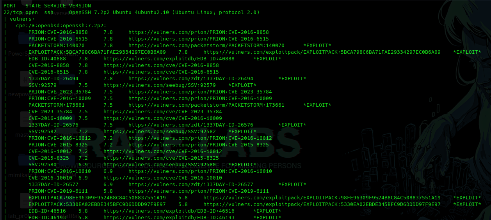